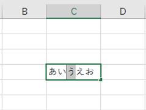
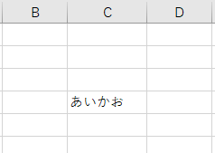

【最終更新日: 2021/02/10】
こんにちは、Office サポートです。
本記事では新たに確認された、Excel for Microsoft 365 で上書きモードで DBCS を 1 文字を編集すると 2 文字分上書きされる問題について説明します。
現象
Excel for Microsoft 365 で Insert キーを押下し、
上書きモードで DBCS (2 バイト文字) を編集すると、意図せず 2 文字ぶん上書きされます。
再現手順
例) 「あいうえお」を「あいかえお」に直したい場合
1. 任意のセルに、「あいうえお」と入力します。
2.「う」のまえにカーソル入れます。
3. [insert] キーで上書きモードにします。

4.「か」と入力し、確定のため [Enter] キーを押します。
結果 :
「う」と「え」の部分が、「か」で上書きされて、「あいかお」になります。

期待する結果は、「あいかえお」です。
解決方法
以下の更新チャネル/バージョンで修正しました。
下記以降の更新チャネル/バージョンに更新することで解決します。
最新チャネル (プレビュー) : バージョン 2012 (ビルド 13530.20064)
最新チャネル : バージョン 2012 (ビルド 13530.20316)
半期エンタープライズ チャネル (プレビュー) : バージョン 2008 (ビルド 13127.21064)
半期エンタープライズ チャネル : バージョン 2008 (ビルド 13127.21064)
月次エンタープライズ チャネル : バージョン 2012 (ビルド 13530.20528)
回避策
[insert] キーで挿入モードに切り替えて、編集します。
状況
マイクロソフトでは、この問題をこの資料の対象製品として記載されているマイクロソフト製品の問題として認識しています
更新履歴
2021/01/14 : 解決方法を追加しました。
2021/02/10 : 解決方法に、月次エンタープライズ チャネルを追加しました。
本情報の内容 (添付文書、リンク先などを含む) は、作成日時点でのものであり、予告なく変更される場合があります。